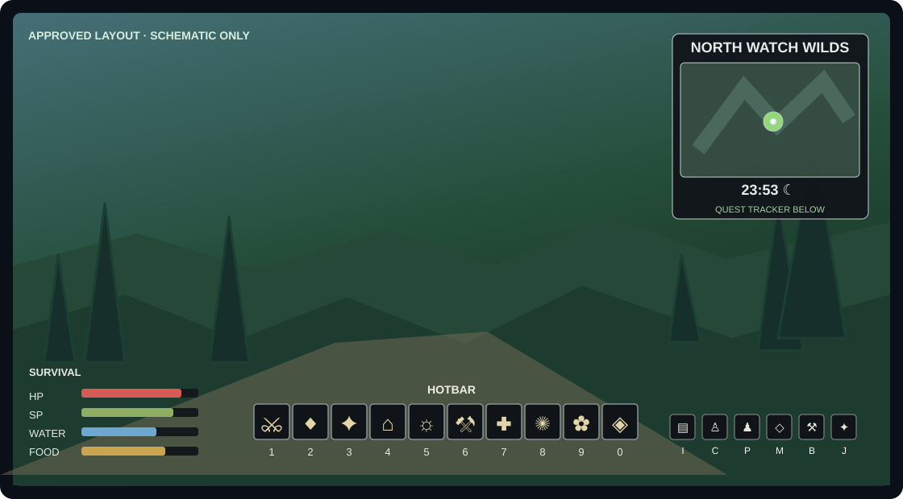

⌂
BUILD
Construct and expand your Viking refuge.
Construct and expand your Viking refuge.
Scavenge, craft and endure a brutal world.
Find and protect survivors to grow your clan.
Defend against the relentless infected.
Published work and future development priorities. Alpha features still require continued testing, refinement and optimization.
Development status: v0.19.0 is a playable alpha, not a finished or fully verified release. Future milestones are subject to change.
A living record of the choices shaping Project Ragnarok. Approved design describes our intended game; it does not mean a feature is already playable. Official shipped changes are recorded separately in the Dev Log.
Stylized 3D Viking survival with a readable, vibrant wilderness, imposing survivors, grounded creatures, enduring settlements and the supernatural plague. The approved base-character reference sets the standard for future physique and class variants.
First-survivor flow:
Successor flow:
The first physical two-PC co-op session revealed significant defects that local loopback tests missed. The published build remains an alpha test, not a stable co-op milestone.

Approved character, UI and trophy art references remain in the local Design Assets folders. This site uses existing website artwork, and its official Dev Log documents published features without presenting private reference art as uploaded assets.
Official published builds, patch notes and known limitations, straight from Project Ragnarok's GitHub releases. Work-in-progress experiments are not included until published.
The latest published releases are displayed here. Patch notes are taken from each GitHub release.
Project Ragnarok is in early development. The latest published Windows alpha playtest is v0.19.0. Enter the access code above to reveal the download, extract the complete ZIP into a writable folder, and launch ProjectRagnarok.exe with RagnarokUpdater.exe beside it. Solo playtesting is the current focus; physical two-PC co-op testing of this release remains pending.
Found a bug? Share your feedback on the GitHub issue tracker.
Project Ragnarok v0.19.0 — Island Survival Playtest is now available. View release notes.